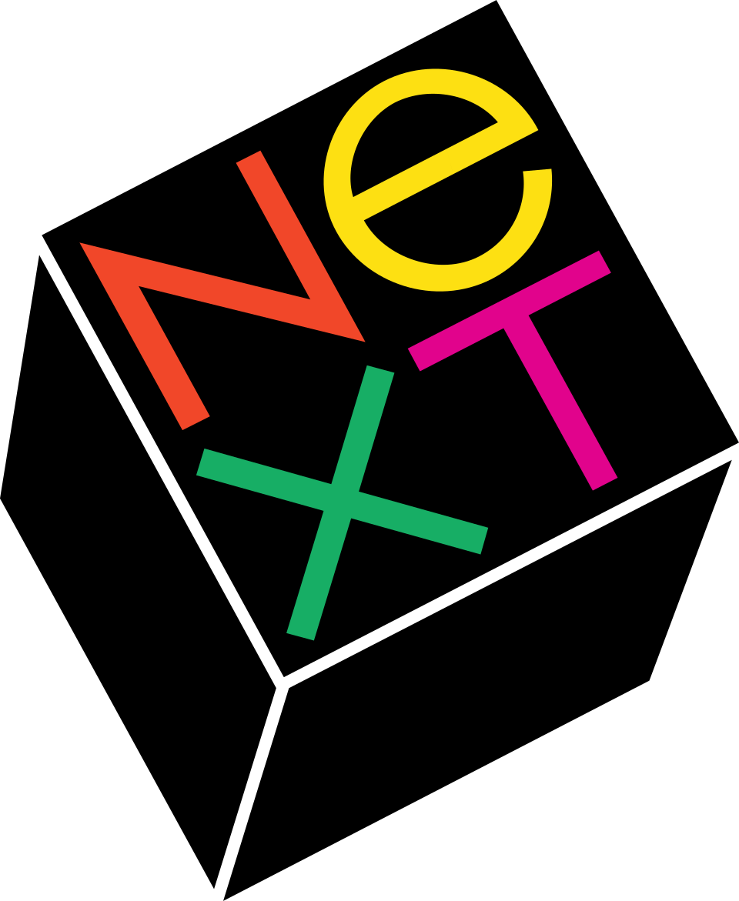

NeXT
NeXT(NeXT)는 1985년 미국 레드우드시티에서 설립되어 고등교육 및 비즈니스 시장을 위한 컴퓨터 워크스테이션을 전문으로 했고 이후 웹 소프트웨어를 개발한 기술 기업이다.
최종 업데이트

NeXT는 어떤 브랜드인가
NeXT는 레드우드시티에 본사를 둔 미국의 기술 기업으로, 고등교육 및 비즈니스 시장을 위한 컴퓨터 워크스테이션을 전문으로 했다. 1988년 넥스트 컴퓨터를 선보였고 1990년에는 넥스트큐브와 더 작은 넥스트스테이션을 출시했지만, 이 시리즈는 총 약 5만 대만 출하되어 판매량은 제한적이었다.
그럼에도 객체 지향 프로그래밍과 그래픽 사용자 인터페이스는 컴퓨터 업계에 큰 영향을 미쳤다. NeXT는 썬 마이크로시스템즈와 협력해 오픈스텝을 만들었고, 1993년에는 하드웨어 산업에서 철수해 소프트웨어에 집중했다.
이후 최초의 기업용 웹 프레임워크 중 하나인 WebObjects를 개발했다. 1997년 애플에 합병되며 스티브 잡스는 애플의 자문 역할을 맡게 되었고, NeXT의 기술은 이후 Mac OS X의 기반이 되었다.
NeXT는 어떻게 시작되고 성장했나
NeXT는 1985년 애플의 공동 창업자였으나 그해 애플에서 해고된 스티브 잡스가 설립했다. 잡스는 화학 분야 노벨상 수상자 폴 버그로부터 고등교육을 위해 설계된 워크스테이션을 만들자는 제안을 받은 뒤 회사 설립을 구상했다.
조안나 호프만, 버드 트리블, 조지 크로우, 리치 페이지 등 전 애플 직원 여럿이 잡스를 따라 NeXT로 이직했다. 1987년 로스 페로가 NeXT 주식의 16%를 위해 2천만 달러를 투자하며 첫 주요 외부 투자자가 되었고, 1988년 회사 이사회에 합류했다.
1986년에는 그래픽 디자이너 폴 랜드를 영입해 브랜드 아이덴티티와 NeXT라는 회사 이름을 만들었다.
NeXT의 브랜드 아이덴티티는 무엇인가
NeXT는 객체 지향 프로그래밍과 그래픽 사용자 인터페이스로 컴퓨터 업계의 트렌드를 이끌었고, 그 기술이 이후 Mac OS X의 근간이 되었다는 점에서 구분된다.
NeXT의 대표 제품과 서비스는 무엇인가
NeXT의 첫 워크스테이션은 1988년 공개된 넥스트 컴퓨터로, 독특한 마그네슘 정육면체 케이스 때문에 "더 큐브"라는 별명을 얻었다. 1990년에는 넥스트큐브와 더 작은 넥스트스테이션을 출시했다.
NeXT는 자체 운영체제인 NeXTSTEP을 개발했고, 어도비와 함께 2차원 그래픽스 엔진인 디스플레이 포스트스크립트를 공동 개발했다. 썬 마이크로시스템즈와 협력해 NeXTSTEP의 애플리케이션 계층을 타사 운영체제에서도 실행할 수 있게 분리한 오픈스텝을 만들었다.
1993년 하드웨어 사업에서 철수한 뒤에는 OPENSTEP for Mach와 최초의 기업 웹 프레임워크 중 하나인 WebObjects 개발에 집중했다.
NeXT는 지금 어떤 상태인가
NeXT 로고는 어떻게 변해왔나
자주 묻는 질문
NeXT는 어느 나라 브랜드인가요?
NeXT는 미국의 기술·전자 브랜드입니다.
NeXT는 언제 설립되었나요?
NeXT는 1985년 설립되었습니다.
NeXT의 브랜드 아이덴티티는 무엇인가요?
NeXT는 객체 지향 프로그래밍과 그래픽 사용자 인터페이스로 컴퓨터 업계의 트렌드를 이끌었고, 그 기술이 이후 Mac OS X의 근간이 되었다는 점에서 구분된다.
NeXT의 대표 제품은 무엇인가요?
NeXT의 첫 워크스테이션은 1988년 공개된 넥스트 컴퓨터로, 독특한 마그네슘 정육면체 케이스 때문에 "더 큐브"라는 별명을 얻었다.
NeXT는 현재 어떤 상태인가요?
애플은 1997년 150만 주의 애플 주식을 포함한 4억 2천 7백만 달러 규모의 계약으로 NeXT를 합병했다.
NeXT의 창업자는 누구인가요?
NeXT의 창업자는 스티브 잡스입니다(위키데이터 기준).
NeXT의 본사는 어디에 있나요?
NeXT의 본사는 레드우드시티에 있습니다(위키데이터 기준).
출처와 검증
NeXT 관련 참고: 공식 웹사이트 · 위키데이터 Q308993 · 한국어 위키백과 · 영어 위키백과. 브랜드명은 한글과 원어를 함께 표기하되 데이터에 없는 표기는 만들지 않습니다. 기원 국가·설립연도는 검수된 정의문에서 확인된 값을 우선하고, 없을 때만 공식 웹사이트 URL이 일치하는 위키데이터 개체의 값을 씁니다. 위키데이터 값은 2026-09-26 기준입니다.